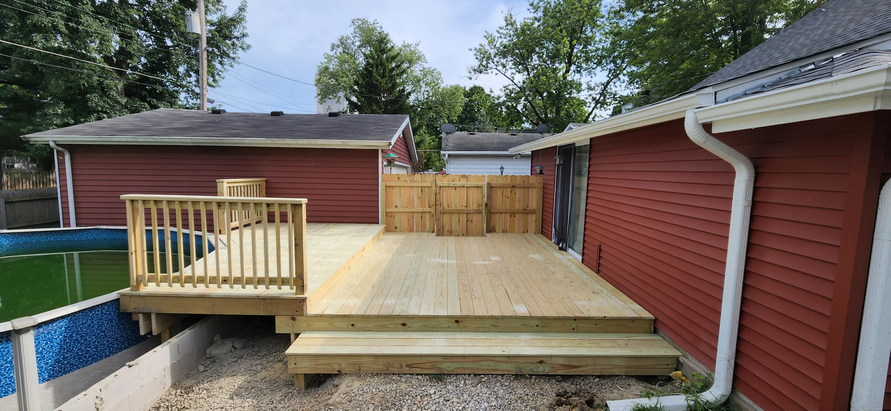

A lot of homeowners put off getting estimates because they assume it means sitting through a sales pitch or feeling pressured to commit on the spot. That's not how we operate. A Woodland Fence and Deck estimate visit is exactly what it sounds like: a contractor comes out, looks at your project, and tells you what it would cost to build it right. That's it.
Here's the full picture of what happens before, during, and after.
Before Ross Arrives — No Prep Required
You don't need to do anything to prepare for the visit. You don't need to have a design in mind, a specific material picked out, or a firm budget nailed down. That's what the conversation is for.
If you have rough ideas — "I want a 20x16 deck off the back door" or "I need to fence the back half of the yard" — bring them. If you've been saving photos or have inspiration images, those help. But they're not required. Coming in with an open mind is completely fine.
What you should do before the visit:
- Know roughly where you want the project (back yard, side yard, front entrance, etc.)
- Have a ballpark idea of size if applicable — even "around 300 square feet" is enough to start
- Think about whether you have an existing structure that needs to come down first
What Happens On-Site
The visit typically takes 30–60 minutes depending on the complexity of the project. Ross will walk through the following:
Property Walkthrough
First, you walk the site together. Ross looks at the terrain, existing structures, access points, and any site conditions that affect the build — slopes, drainage patterns, underground utilities, proximity to the house or property line. This is where the real information lives. Photos and descriptions only tell part of the story.
Scope Conversation
Once he's seen the site, Ross will ask questions to sharpen the scope: What size are you envisioning? What's the primary use — entertaining, kids' play space, pets? Do you have a preference on materials? Any specific features like built-in seating, stairs, a gate, or a pergola above? This is the part where your ideas get refined into something buildable.
Measurements
For decks, patios, and structures, Ross takes measurements on-site. For fencing, he'll walk the full perimeter or section to be enclosed. This is what makes the quote accurate — not a rough square footage guess, but actual site dimensions.
Honest Material Discussion
If you haven't picked a material, Ross will give you a straight breakdown of options. He'll tell you what works well for your specific site conditions and what he'd recommend. He won't upsell you on a more expensive product if it doesn't fit your situation.
Ready to see what your project would cost?
Request Your Free EstimateHow the Quote Is Built
After the visit, Ross puts together a detailed written quote. Here's what you should expect it to include:
- Full scope of work — exactly what's being built, what materials are being used, and any options if you have choices to make
- Demo and haul-away — if there's an existing deck, fence, or structure coming down, that's included in the quote at no additional charge. We don't leave debris
- Permits — if your project requires permits, we handle the application and the cost is included in your quote. You won't be handed a permit fee surprise at the end
- No hidden labor fees — the quote is the price. We don't add disposal fees, material surcharges, or "additional labor" line items after the fact
Most quotes are turned around within a few business days of the visit. For larger or more complex projects, it may take a bit longer to get the numbers right.
What Happens After You Receive the Quote
Nothing happens automatically. The quote is yours — there's no automatic follow-up call two days later asking if you've made a decision. If you have questions about the quote, Ross is reachable by phone or email and will walk through any line item with you.
If you're comparing multiple quotes, that's completely normal and expected. A few things worth checking when you compare:
- Does the other quote include demo and haul-away, or is that separate?
- Are permits included, or will there be a fee at the end?
- Is the framing substructure spec'd for Indiana frost depth, or is it a generic build?
- Is there a workmanship warranty, and for how long?
When you're ready to move forward, we schedule a start date and send a contract. At that point, a deposit is required to hold your spot in the build schedule — the balance is due on completion.
The Bottom Line
An estimate visit with Woodland Fence and Deck is a low-stakes conversation. You get real information about what your project would cost from someone who's been doing this since 2015, and you walk away with a written quote that tells you exactly what you'd be getting. No obligation, no pressure, no pitch.
If you're on the fence about whether to even move forward with a project, an estimate is still worth doing — it gives you real numbers to make an informed decision, and it costs you nothing.